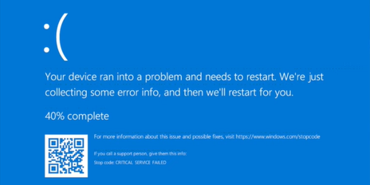

Loop de reinicialização
O problema
O computador liga, começa a carregar o sistema e reinicia sozinho, repetindo isso sem parar, muitas vezes sem mostrar nenhuma mensagem de erro.
Possíveis causas
Uma atualização mal instalada, um driver incompatível, arquivos do sistema corrompidos ou uma tela azul (BSOD, Blue Screen of Death: a tela de erro crítico do Windows) que some rápido demais para ser lida. No Linux, um kernel novo com problema pode causar o mesmo efeito. Também pode ser hardware: superaquecimento, memória RAM com defeito ou fonte de alimentação fraca.

Solução no Windows
Para abrir o Ambiente de Recuperação do Windows (WinRE), ligue o computador e, quando aparecer o logotipo do fabricante, segure o botão de energia por 10 segundos; repita duas ou três vezes. Vá em Solução de problemas > Opções avançadas > Configurações de Inicialização > Reiniciar e pressione 9 (ou F9) para Desabilitar reinício automático após falha. Assim a tela azul fica parada e é possível anotar o código do erro.
Se o problema começou depois de uma atualização, use Opções avançadas > Desinstalar Atualizações. Se
começou depois de um driver ou programa, pressione 4 (ou F4) nas Configurações de Inicialização para entrar
no Modo de Segurança (que carrega o Windows só com os drivers essenciais), reverta o driver no Gerenciador de
Dispositivos e execute sfc /scannow e DISM /Online /Cleanup-Image /RestoreHealth.
Solução no Linux
Ao ligar, segure Shift (BIOS) ou aperte Esc (UEFI) para abrir o menu do GRUB (o gerenciador de boot do
Linux). Em Opções avançadas para Ubuntu, escolha o kernel anterior: se o sistema iniciar, o problema é o
kernel novo, que pode ser removido com sudo apt remove linux-image-VERSÃO.
Para descobrir o motivo da última reinicialização, o comando journalctl -b -1 -p err mostra os
erros registrados na inicialização anterior. O modo de recuperação (recovery mode), no mesmo menu do
GRUB, permite reparar pacotes com a opção dpkg.
Quando é hardware
Se nada resolver, verifique se os coolers estão girando, limpe a poeira do gabinete, retire e recoloque os pentes de memória RAM (testando um de cada vez) e confira se a fonte tem potência suficiente. O teste de memória Memtest86+, disponível no menu do GRUB ou em pendrive, verifica se a RAM tem defeito. Veja também Problemas mais comuns em computadores antigos e Loop de reparo automático.